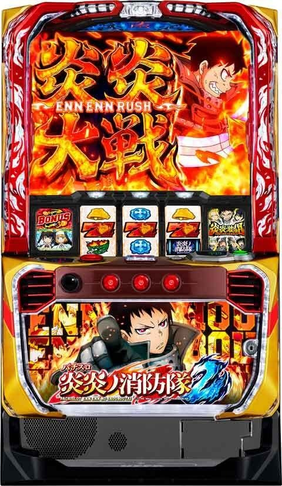
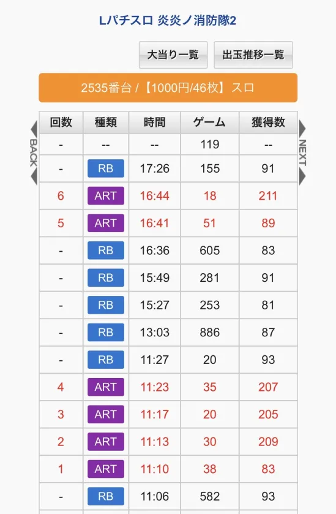
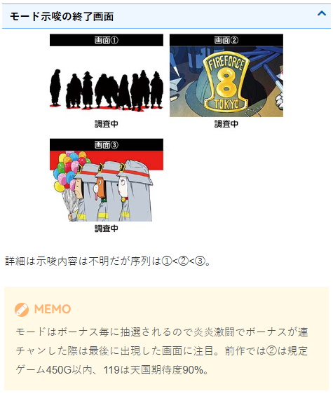
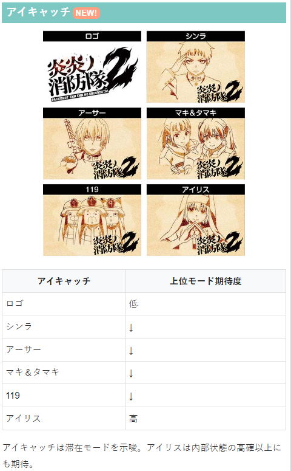
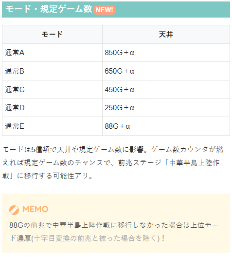
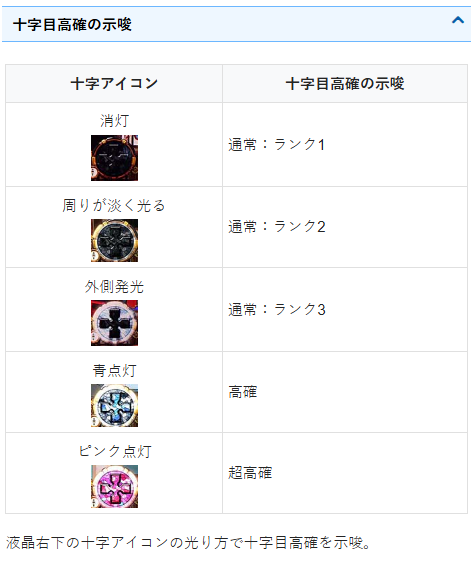
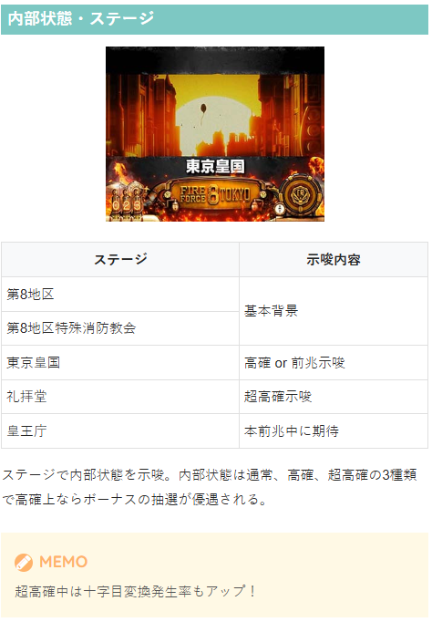

L炎炎ノ消防隊2

【天井情報】
天井G数 850G＋α
設定変更時はボーナス天井が最大650G＋α
恩恵 初当りボーナス
炎炎ループ(炎炎激闘や炎炎大戦など)間2000G消化でSPエピソードボーナス(炎炎激闘濃厚)に当選。
設定変更時は最大1500G＋αに短縮。
【リセット判別】
不明
【有利区間について】
リセット契機 炎炎激闘中のボーナス終了時の一部
エンディング終了時
恩恵 炎炎激闘のセットストック
エンディング等で有利区間をリセットした場合は炎炎激闘のセットストックを獲得!?
狙い目
※液晶と店データのG数がずれている事あります。狙い目は液晶G数で想定。（前作同様）
【リセット狙い】
ボーナス間（0スルー） 360Gから
ボーナス間（1スルー以降） 600Gから
炎炎ループ(炎炎激闘や炎炎大戦など)間 750Gから（ボナ間200Gハマりで150Gボーダー下げる）
【ゲーム数天井狙い】
ボーナス間 630Gから
炎炎ループ(炎炎激闘や炎炎大戦など)間 1300Gから（ボナ間200Gハマりで150Gボーダー下げる）
【ゾーン狙い】
88Gゾーン
朝イチのみ 50Gから
それ以外 70Gから
250Gゾーン
朝イチのみ 180Gから
それ以外 狙えない
※朝イチ88G前兆で中華半島上陸作戦に移行しなかった場合は250Gゾーンまで？
【スルー天井狙い】
5スルー 0Gから
4スルー（炎炎ループ間1000G未満） 300Gから
4スルー（炎炎ループ間1000G以上） 0Gから
※５スルー後のボーナスはエピソードボーナス濃厚？
【示唆関連の押し引きについて】
アイキャッチ
119、アイリス 詳細不明だがこの2つは88Gゾーンくらい確認？ボーナス当選まで？
終了画面
119 88Gゾーン確認？
※終了画面について連荘中の場合は最後のボーナス時の画面のみ有効？（前作同様なら）
十字目高確
青点灯以上は消えるまで
【有利区間関連狙い】
不明
やめ時
RB後は伝導者の罠終了後か28G回してやめ。
炎炎激闘後にヤメる場合は潜伏を確認。最大28G(平均8G)。
88Gの前兆で中華半島上陸作戦に移行しなかった場合は上位モード濃厚(十字目変換の前兆と被った場合を除く)で打てそう？
その他
炎炎ループ間の確認方法（履歴）
RBが続いている＝炎炎ループ突入してない。
11:27からのハマりは、20+886+253+281+605+51=2096
2096Gで天井が発動したと思われる。（2000G丁度ではなく+100G前後で発動）

モード示唆の終了画面

アイキャッチ

モード・規定ゲーム数

十字目高確の示唆

内部状態・ステージ

参考元
基本情報
- メーカー: SANKYO
- 機械割: 97.7% 〜 114.9%
- 導入開始日: 2026年02月02日（月）
- ゲーム性概要: ●十字目変換がカギを握るシリーズおなじみのゲーム性 ●初当りボーナス後は伝導者の罠→エピソードボーナス当選で炎炎ループが発動 ●初当りボーナスから炎炎ループへの直行パターンもアリ ●「炎炎激闘」は15G＋α継続するセットストック型のボーナス高確率ゾーン ●新搭載の「炎炎大戦」はボーナス期待度約80%のAT状態（純増約5.8枚/G） ●「EX BONUS」や「炎炎 BOOST」など、ボーナスにもパワーアップした要素が満載！


打ち方
打ち方・小役
打ち方（小役狙い）
［最初に狙う絵柄］ 左リールにBARを狙う。 スイカまでスベった時を除き、中・右リールはフリー打ちでOKだ。
［スイカ停止時］ 中リールはBAR・右リールは白7を目安にスイカを狙おう。
［レア役の停止例］
［押し順ナビからのレア役や小Vリプレイ］ 一部のボーナス中やAT（炎炎対戦）中は押し順からレア役や小Vリプレイ、十字目リプレイが揃うパターンもある。
押し順ナビ→小Vリプレイ・レア役・十字目リプレイ
| 小Vリプレイ | ボーナス中の森羅万象抽選 |
|---|---|
| レア役 | 炎炎ボーナス中の継続ストック抽選 |
| 十字目リプレイ | AT中はボーナス抽選、 炎炎ブースト中は継続ストック獲得時 |
※押し順からの十字目リプレイはおもにレア役成立時に発生
変則押しはNG
ナビ非発生時は左1stでの消化を推奨だ。
解析情報通常時
小役関連
小役確率
| 役 | 確率 |
|---|---|
| リプレイ | 1/8.6 |
| 小Vリプレイ | 1/5.7 |
| スイカ | 約1/128 |
| チェリー | 約1/80 |
| チャンス目 | 約1/128 |
| 十字目リプレイ | 約1/5000 |
※レア役合算は約1/35
十字目リプレイは確率が低いぶん期待度がかなり高く、当選状況に応じた強力な恩恵を獲得できる。
内部状態関連
ボーナス高確と十字目高確解説
［ボーナス高確］
ボーナス高確
| 移行契機 | スイカ成立時の一部 |
|---|---|
| 継続ゲーム数 | 20G固定 |
| 高確種別 | 通常＜高確＜超確率 |
| 滞在中の抽選 | 十字目変換発生時のボーナス期待度がアップ |
| 備考 | 超高確中は小Vリプレイ時の十字目変換発生率もアップ |
高確・超高確中は十字目変換発生確率および十字目リプレイ成立時のボーナス当選率がアップ。 高確中は超高確への移行を抽選する。 また、スイカ時は十字目変換→ボーナス高確の順で抽選するため、十字目変換発生かつボーナス高確に当選しても、スイカ成立時の状態を参照してボーナスが抽選される。
［十字目高確］
十字目高確
| 移行契機 | 小Vリプレイ・チェリー・チャンス目の一部 ※超高確移行はチェリー・チャンス目で抽選 |
|---|---|
| 高確種別 | 通常（ランク1～3）＜高確＜超高確 |
| 継続ゲーム数 | 3～10G（高確or超高確時） |
| 滞在中の抽選 | 小Vリプレイ・レア役時の十字目変換発生率がアップ |
| 備考① | 十字目変換のトータル確率は約1/100 |
| 備考② | 超高確中の小Vリプレイとレア役は十字目変換濃厚 |
通常・高確・超高確の3種類で十字目変換の発生期待度が変化。 通常にはランク1〜3の3段階があり、十字目変換の確率は共通だが、ランクが高いほど高確・超高確へ移行しやすい。 画面右下の十字アイコンが青なら高確、赤なら超高確の期待大だ。
※十字アイコンの種類はコチラ
十字目高確ごとの十字目変換ポイント
全状態共通で小Vリプレイ・レア役時に十字目変換を抽選
高確中のレア役は約50%で十字目変換発生
超高確中は小Vリプレイ・レア役で十字目変換濃厚
十字目リプレイは十字目変換が発生しないが、 レア役での十字目変換と同等の抽選を受けられる
内部状態移行率
「ボーナス高確抽選」
ボーナス高確移行率
| 役 | 通常→高確 | 高確→超高確 |
|---|---|---|
| スイカ | 約35% | 約35% |
ボーナス高確のゲーム数は20G固定。高確中に超高確に当選した場合は20Gが再セットされる。
「十字目高確・十字目ランク抽選」
十字目高確移行率 ランク1中
| 役 | 高確へ | 超高確へ |
|---|---|---|
| 小Vリプレイ | ー | ー |
| チェリー・チャンス目 | 約25％ | 約1% |
ランク2中
| 役 | 高確へ | 超高確へ |
|---|---|---|
| 小Vリプレイ | ー | ー |
| チェリー・チャンス目 | 約50％ | 約1% |
ランク3中
| 役 | 高確へ | 超高確へ |
|---|---|---|
| 小Vリプレイ | 約25％ | ー |
| チェリー・チャンス目 | 約99％ | 約1% |
高確中
| 役 | 高確へ | 超高確へ |
|---|---|---|
| 小Vリプレイ | ー | ー |
| チェリー・チャンス目 | ー | 約3% |
ランク1・2中は、まず十字目高確・超高確への移行を抽選して、漏れた場合に十字目ランクの昇格を抽選。ランク3では高確・超高確への、高確中は超高確への移行を抽選する。
十字目ランク昇格率
| 役 | 昇格率 |
|---|---|
| 小Vリプレイ | 約30% |
| チェリー・チャンス目 | 約67% |
ランク1or2滞在中は上記のランク昇格抽選がおこなわれる。
（超）高確継続保障ゲーム数振り分け
| ゲーム数 | 振り分け |
|---|---|
| 3G以上 | 約69% |
| 6G以上 | 約30% |
| 10G以上 | 約1% |
高確から超高確へ移行した場合は、高確の残りゲーム数に超高確移行で獲得した分を上乗せ。 保障ゲーム消化後はベルorベルこぼしを引くまで高確・超高確が継続する。
モード
通常モードごとのゲーム数天井
| モード | 天井 |
|---|---|
| モードA | 850G＋α |
| モードB | 650G＋α |
| モードC | 450G＋α |
| モードD | 250G＋α |
| モードE | 88G＋α |
通常モードは基本的にボーナスを契機に抽選。前作までの150Gの抽選がなくなった代わりに、250Gでの当選率がアップしている。 今回もモードE（通称：119モード）は119G（88G＋前兆）までのボーナス当選濃厚だ。
モードごとの中華半島上陸作戦（前兆）移行分布
| ゲーム数 | A | B | C | D | E |
|---|---|---|---|---|---|
| 88G | 移行濃厚 | 移行濃厚 | ◎ | ◯ | 天井 |
| 250G | ◎ | ◎ | ◎ | 天井 | |
| 350G | ◎ | △ | △ | ||
| 450G | 移行濃厚 | 移行濃厚 | 天井 | ||
| 550G | △ | △ | |||
| 650G | 移行濃厚 | 天井 | |||
| 750G | ◎ | ||||
| 850G | 天井 |
△は前兆ステージに行きにくい分、移行すれば本前兆期待度が約40〜60%と高い。 基本的に各ゾーンではプレ前兆に行くことが多いが、最終的に中華半島上陸作戦へ移行したかどうかが重要になる。
ゲーム数ごとの法則まとめ
88Gで前兆ステージに移行しないとモードCorD濃厚、 連続演出にも発展しない場合はモードD濃厚
250Gで前兆ステージに移行しないとモードBorCのチャンス ※同じ◎でも移行しない割合がモードAよりもB・Cの方が高い
350Gがフェイクの中華半島だった場合はモードBorCの可能性大
450・650Gでは必ず前兆ステージ移行（天井に期待）
550Gがフェイクの中華半島だった場合はモードBの可能性大
※十字目変換での前兆と被った場合は判別できないので注意
持ち玉にもよるが、ヤメ時を考えている場合は、ボーナス後は88G（前兆込みで119G）まで回してフェイクだったら終了、前兆ステージに移行しなかったら続行…という流れが理想だ。
モード振り分け
| モード | 設定変更時 | ボーナス終了後 |
|---|---|---|
| モードA | ー | 約48% |
| モードB | 約24% | 約9% |
| モードC | 約4% | 約14% |
| モードD | 約39% | 約9% |
| モードE | 約33% | 約20% |
設定変更後は約33%でモードE（88G＋前兆でボーナス当選）へ移行する。
十字目変換
十字目変換・十字目リプレイ
今作では小Vベルではなく、小Vリプレイから十字目変換が発生。性能はこれまでとほぼ同じで、必ず前兆移行かつ、ボーナス当選のメイン契機として機能する。 また、今回はレア役（チェリー・スイカ・チャンス目）から十字目変換が発生する場合もあり、このパターンは小Vリプレイ契機よりも期待度が高い。
状態別・十字目変換時の抽選
| 状態 | 抽選 |
|---|---|
| 通常時 | ボーナス抽選 |
| 伝導者の罠 | ボーナス抽選 |
| 通常時・伝導者の罠中の前兆中 | アドラリンク抽選 |
| ST・AT中 | ボーナス抽選 |
十字目リプレイ時の抽選
| 状態 | 抽選 |
|---|---|
| 十字目リプレイ （押し順なし） | 全状態で強レア役扱いの抽選 |
| 押し順からの十字目リプレイ | AT中はボーナス濃厚、 炎炎ブースト中は継続ストック獲得 |
押し順からの十字目リプレイはAT中・炎炎ブースト中専用パターンで、内部的にリプレイや弱レア役（スイカを除く）が成立している場合に押し順を出して十字目リプレイとして表示する。
「十字マーク変換」
「アイリス変換」
「シンラ変換」
「紅丸変換」
十字目変換パターン
| 変換パターン | 期待度 |
|---|---|
| 十字マーク | 平均30% （十字目変換のトータル） |
| アイリス（レア役時専用） | 50%以上 |
| シンラ | 約84% |
| 紅丸 | 約98% |
十字目変換時の液晶パターンで期待度が大きく変化する。
変換時の裏ボタンはコチラ
変換ゲームでの期待度示唆はコチラ
内部状態ごとの十字目変換発生率 ボーナス高確が ［通常or高確］ の場合
| 役 | 通常 | 十字目高確 | 十字目超高確 |
|---|---|---|---|
| 小Vリプレイ | 約1％ | 約50% | 100% |
| チェリー・チャンス目 | 約1％ | 約50% | 100% |
| スイカ | 約3％ | 約50% | 100% |
ボーナス高確が ［超高確］ の場合
| 役 | 通常 | 十字目高確 | 十字目超高確 |
|---|---|---|---|
| 小Vリプレイ | 約8％ | 約50% | 100% |
| チェリー・チャンス目 | 100％ | 100％ | 100% |
| スイカ | 100％ | 100％ | 100% |
十字目変換のトータル発生確率は約1/100。
十字目変換発生時のボーナス当選率
| 変換パターン | 通常 | ボーナス高確 | ボーナス超高確 |
|---|---|---|---|
| 小Vリプレイ | 約25% | 約40% | 100% |
| 弱レア役 | 約50% | 約75% | 100% |
※十字目リプレイもレア役と同様の数値で抽選（十字目変換は非発生）
高確中や超高確中は期待度がアップする。
ボーナス当選契機割合
| 契機 | 割合 |
|---|---|
| ゲーム数消化 | 約30～40% |
| 小役契機（おもに十字目変換） | 約60～70% |
十字目変換経由が初当りのメインとなる。
前兆ステージ
第8特殊消防隊緊急出動
十字目変換によるボーナスの前兆ステージで、今回も色が昇格するほど本前兆期待度がアップ。 プレ前兆を含め、約32G継続する。
「色の昇格」 白＜青＜緑＜赤の順にチャンスだ。
「連続演出」
第8特殊消防隊緊急出動中の連続演出
| 演出 | 期待度序列 |
|---|---|
| 鬼の”焰ビト”を鎮魂せよ！ | 低 |
| 工場長夫人の”焰ビト”を鎮魂せよ！ | ↓ |
| 大”焰ビト”を鎮魂せよ！ | ↓ |
| ナタクを救出せよ！ | 高 |
チャンスアップ（赤系の演出など）が発生すれば期待度大幅アップだ。
中華半島上陸作戦
規定ゲーム数消化による前兆ステージで、滞在中はステージアップが発生するほどチャンス。 プレ前兆を含め、約32G継続する。
「ステージアップ」 森林＜御神体前＜御神体内部＜御神体中心部の順に期待度が高い。
「連続演出」
中華半島上陸作戦中の連続演出
| 演出 | 期待度序列 |
|---|---|
| ジャイアントワームを撃退しろ！ | 低 |
| “焰ビト”テンペを鎮魂せよ！ | 高 |
中華半島上陸作戦の連続演出は2種類のみ。赤文字や赤タイトルなら大チャンスだ。
エピソード前兆
［ヒバナエピソード］
［紅丸エピソード］
エピソード前兆
| 継続ゲーム数 | 18G＋α | |
|---|---|---|
| 本前兆時の 恩恵 | ヒバナエピソード （約束の火華） | SPエピソード |
| 本前兆時の 恩恵 | 紅丸エピソード （誰が為の炎） | SPエピソード＋紅J大戦 |
エピソード前兆の本前兆期待度
| パターン | 期待度 |
|---|---|
| ヒバナエピソード | 約95％ |
| 紅丸エピソード | 約98％ |
通常時のゲーム数消化or十字目変換から突入する可能性のある超高期待度の前兆ステージ。本前兆だった場合はSPエピソードボーナス当選＝ST以上濃厚になる。 もちろん、フェイク前兆だった場合でもアドラリンクを成功させれば本前兆に書き換わるので要注目だ。
［エピソードが進むほどチャンス］ どちらのエピソードもファイナルエピソードをクリアできれば成功となる。
アドラリンク（書き換え含む）
アドラリンク解説
通常時や「伝導者の罠」中の前兆中（フェイクor本前兆）に当選する可能性のある3G間のCZで、滞在中に小Vリプレイorレア役を引けば成功濃厚＝報酬が昇格。 失敗しても前兆状態へ復帰するだけなので、アドラリンクに当選した分だけ、良い恩恵を獲得できるチャンスが増える。
アドラリンク 性能
| 移行契機 | 前兆中の十字目変換の一部・十字目リプレイ ※十字目リプレイは当選濃厚 |
|---|---|
| 継続ゲーム数 | 3G |
| 移行確率 | 通常時：約1/450、伝導者の罠中：約1/550 |
| 成功期待度 | 約50% |
| 消化中の抽選 | 小Vリプレイorレア役で成功 |
| 成功時の恩恵 | 前兆の抽選結果が昇格 （フェイク前兆→本前兆など） |
| 備考① | 中華半島上陸作戦・第8特殊消防隊緊急出動の プレ前兆中は発生しない場合あり |
| 備考② | アドラリンク中の十字目リプレイの一部で ロングフリーズ発生 |
アドラリンク成功時の恩恵昇格例
| ボーナスフェイク前兆 | ボーナス本前兆 |
|---|---|
| REG本前兆 | SPエピソード |
| SPエピソード本前兆 | SPエピソード＋紅J大戦昇格 |
| SPエピソード＋紅J大戦 | 初期セットに1セット追加 |
| 伝導者の罠の白7エピソード本前兆 | 白7エピソード＋紅J大戦昇格抽選 |
伝導者の罠中の白7エピソード本前兆は、十字リプレイ契機のアドラリンクに成功すれば紅J大戦濃厚になる。
アドラリンク＆書き換え抽選
フェイク前兆中・レア役時の書き換え
小Vリプレイの十字目変換はアドラリンク抽選
弱レア役時に本前兆への 書き換え抽選 ＋アドラリンク抽選
十字目リプレイは 書き換え抽選＋アドラリンク濃厚
フェイク前兆中のレア役は、アドラリンクだけでなく、本前兆への書き換え抽選も同時におこなわれる。 例えば通常時のフェイク前兆中の場合、レア役で本前兆へ書き換え、さらにアドラリンクに当選→成功で、いきなりエピソードボーナスに当選するという嬉しいケースもあり得る。
前兆中のアドラリンク当選率
| 役 | 通常 | 十字目 高確 | 十字目 超高確 | 伝導者の罠 |
|---|---|---|---|---|
| 小Vリプレイ | 一 | 約5% | 100% | 約1% |
| チェリー | 約1% | 約16% | 100% | 約3% |
| チャンス目 | 約1% | 約16% | 100% | 約3% |
| スイカ | 1.5% | 約18% | 100% | 約3% |
| 十字目リプレイ | 100% | 100% | 100% | 100% |
前兆中のアドラリンク当選率は十字目高確の状況で変化（フェイク前兆・本前兆での当選率は共通）。超高確中なら小Vリプレイorレア役を引けば当選濃厚、十字目リプレイは状態不問で当選濃厚になる。 ちなみに、伝導者の罠中には十字目高確がないため、状態による当選率の差はない。
リールロック別期待度
| パターン | 期待度 |
|---|---|
| 1段階 | 約12％ |
| 2段階 | 約89％ |
| ロングフリーズ | アドラバースト濃厚 |
リールロック発生で小Vリプレイ以上の期待度アップ。リールロックが2段階目まで行けば激アツ、もちろんロングフリーズ（十字目リプレイ成立時の一部）まで行けばアドラバースト濃厚となる。
フリーズ
ロングフリーズ動画
十字目成立時の一部でロングフリーズが発生し、アドラバーストへ直行する。
ロングフリーズ性能
| 当選契機 | 通常時orアドラリンク中の十字目リプレイ ※十字目リプレイ確率は約1/5000 |
|---|---|
| 恩恵 | アドラバースト直行 |
通常時よりもアドラリンク中の十字目リプレイのほうがロングフリーズが発生しやすい。
解析情報ボーナス時
初当りボーナス
REGボーナス
初当りのメインとなるボーナスで、終了後は「伝導者の罠」へ移行。基本的に「伝導者の罠」で白7エピソードを引いて、ST（炎炎激闘）を目指す流れになる。 レアパターンだが、REG消化中のレア役で白7エピソードに当選するパターンもある。
REG 性能
| 当選契機 | 初当りの一部 |
|---|---|
| 継続ゲーム数 | ベルナビ10回まで |
| 純増 | 約5.8枚/G |
| 平均獲得枚数 | 約85枚 |
| 消化中の抽選 | レア役で白7エピソードを抽選、 白7エピソード当選後はSTストック抽選 |
| 終了後 | 伝導者の罠へ |
| 備考① | 十字目リプレイは白7エピソード濃厚 |
| 備考② | キャラ紹介のシナリオで設定を示唆 |
SPエピソードボーナス（赤7揃い）
ST（炎炎激闘）以上当選濃厚のボーナス。消化中のエピソードでストック数などを示唆、「神光が生む影」エピソードなら紅J大戦濃厚となる。
スペシャル（SP）エピソード 性能
| 当選契機 | 初当りの一部 |
|---|---|
| 継続ゲーム数 | ベルナビ10回まで |
| 純増 | 約5.8枚/G |
| 平均獲得枚数 | 約85枚 |
| 消化中の抽選 | レア役でSTストックを抽選 |
| 終了後 | ST以上へ |
| 備考① | 十字目リプレイはSTストック濃厚 |
| 備考② | エピソードの内容でSTストック数などを示唆 |
［エピソードの種類に注目］
SPエピソードごとの示唆
| パターン | 示唆 |
|---|---|
| 少年よ、弱くあれ | 複数ストックのチャンス |
| 燃え拡がる悪意 | 複数ストックのチャンス |
| 神光が生む影 | 紅J大戦＋複数ストックのチャンス |
| ヒバナエピソード | 複数ストックのチャンス |
| 紅丸エピソード | 紅J大戦＋複数ストックのチャンス |
※ヒバナエピソード・紅丸エピソードはエピソード前兆経由のボーナス
エピソードによるストック個数の違いはない。
伝導者の罠
伝導者の罠概要
初当りのREG後に突入する、白7エピソードボーナスの高確率状態。十字目変換の高確率状態でもあるので、小Vリプレイやレア役成立でチャンスだ。
伝導者の罠 性能
| 移行契機 | 初当りのREG終了後 |
|---|---|
| 継続ゲーム数 | 30or60G＋α （保障ゲーム消化後に転落抽選） |
| 成功期待度 | 約40%（高設定ほど優遇） |
| 消化中の抽選 | 高確率で白7エピソードを抽選、 前兆中はアドラリンクも抽選あり |
| 備考① | 十字目変換が高確率で発生 |
| 備考② | 十字目変換時の前兆ゲーム数は8G前後 |
| 備考③ | 終了後も通常Eの88G＋α天井まで 打つことをオススメ |
終了後、88Gの前兆で「中華半島上陸作戦」に移行しなかった場合は、良いモード（天井が浅いモード）滞在濃厚なので追ってみる価値アリだ（十字目変換の前兆と重複した場合は例外）。
十字目変換発生率＆白7エピソード期待度（設定1）
| 役 | 十字目変換発生率 | 十字目変換時の期待度 |
|---|---|---|
| 小Vリプレイ | 約42％ | 約30％ |
| チェリー・チャンス目 | 約10％ | 約50％ |
| スイカ | 約15％ | 約51％ |
| 十字目リプレイ | 一 | 100% |
※レア役は十字目変換非発生でも白7エピソード当選の可能性あり
十字目リプレイは十字目変換が発生しないが、成立した時点で白7エピソード濃厚。 小Vリプレイ契機の十字目変換が強パターンも本前兆濃厚だ。 高設定は 十字目変換発生率が約50%、期待度が約40% と高いため、結果的にST初当り確率が高くなる。
前兆中のアドラリンク当選率
| 役 | 当選率 |
|---|---|
| 小Vリプレイ | 約1% |
| チェリー | 約3% |
| チャンス目 | 約3% |
| スイカ | 約3% |
| 十字目リプレイ | 100% |
伝導者の罠中は通常時と異なり十字目高確の概念がないため、前兆中はつねに同じ当選率で抽選される。
リールロック別期待度
リールロック発生でチャンスだ。
エピソードボーナス（白7エピソード）
白7エピソードボーナス
伝導者の罠中に当選する可能性があるST濃厚のボーナス。REG中の抽選で当選する可能性もあり。 エピソードの種類で炎炎激闘のストック数を示唆、ダークヒーローの場合は紅J激闘突入濃厚だ。
白7エピソード 性能
| 当選契機 | REG中の昇格、伝導者の罠中の当選 |
|---|---|
| 継続ゲーム数 | 200枚獲得まで |
| 純増 | 約5.8枚/G |
| 平均獲得枚数 | 約200枚 |
| 消化中の抽選 | レア役でSTストックを抽選 |
| 終了後 | ST（炎炎激闘）へ |
| 備考① | 十字目リプレイはSTストック濃厚 |
| 備考② | エピソードの内容でSTストック数などを示唆 |
［エピソードの種類］
白7エピソードごとのSTストック数示唆
| パターン | 平均ストック個数 |
|---|---|
| 新たな火種 | 約3個 |
| 選択の時 | 約 4 個（3個以上濃厚） |
| 聖女の苦悩 | 約 6 個（5個以上濃厚） |
| ダークヒーロー | 紅J大戦＋約4個 |
※ダークヒーローのストック個数は紅J大戦中のストック期待値込み
あくまで平均個数なので、「新たな火種」でも2セットで終わるケースもある。
炎炎ループ中ボーナス
ボーナス当選期待度
| 役 | 期待度序列 |
|---|---|
| 弱レア役＋十字目変換ナシ | 低 |
| 小Vリプレイ＋十字目変換 | ↓ |
| 弱レア役＋十字目変換 | 高 |
| 十字目リプレイ | 濃厚 |
十字目変換・十字目リプレイ契機で当選したボーナスは基本的に伝導者決戦で告知。十字目変換非経由の弱レア役契機の当選は、ロゴあおりからのボーナスロゴ出現で告知される。
※紅J大戦は伝導者決戦ナシで即告知
「ボーナス前兆中の抽選」 ボーナス本前兆中のレア役では当選しているボーナス種別の昇格を抽選。 十字目リプレイは昇格濃厚＝BIG以上 かつ 炎炎ブースト昇格にも期待できる。
ボーナス非当選の伝導者決戦中は小役で勝利書き換えを抽選（期待度は小Vリプレイ＜弱レア役＜十字目リプレイの順）。ST（炎炎激闘）中よりもAT（炎炎大戦）の方が書き換え期待度が高い。 紅J大戦中はさらに期待度が高いが、伝導者決戦がないので、対象となるゲーム数は短い。
ボーナス種別割合
| ボーナス種別 | ST中（炎炎激闘） | AT中 （炎炎大戦・紅J大戦） |
|---|---|---|
| 炎炎ボーナス系 （赤7揃い系） | 約80% | 約90% |
| アクセルボーナス系 （赤7/赤7/BAR系） | 約10% | ー |
| ブースト系 | 約10% | 約10% |
ST中は平均200枚の炎炎ボーナス系（BIG相当）がメイン。AT中はアクセルボーナス系がないところもポイントだ。
炎炎ループ中ボーナスの獲得枚数
| ボーナス | 獲得枚数 |
|---|---|
| 炎炎ボーナス | 約200枚 |
| ショウエピソード | 約200枚 |
| ラッキースケベられボーナス | 約200枚 |
| EX ボーナス | 約1000～3000枚 |
| アクセルボーナス | 約85枚 |
| 灰焰ボーナス | 約85枚 |
| ラッキースケベられタイム | 約85枚 |
| 炎炎ブースト | 1セット10Gのセット継続型 |
| 超炎炎ブースト | 1セット10Gのセット継続型 |
ボーナス中の抽選内容・特徴など
| ボーナス | 抽選内容など |
|---|---|
| 炎炎ボーナス | 炎炎激闘・1G連・森羅万象 |
| ショウエピソード | 森羅万象濃厚 |
| ラッキースケベられボーナス | 炎炎激闘複数ストックありに期待 |
| EX ボーナス | 炎炎ボーナス開始時の一部で出現 |
| アクセルボーナス | 炎炎大戦獲得のチャンス （実戦上の期待度約20%） |
| 灰焰ボーナス | 森羅万象獲得の大チャンス （実戦上の期待度約66%） |
| ラッキースケベられタイム | 炎炎ボーナス1G連の特化ゾーン （最低1個・平均4個） |
| 炎炎ブースト | 最低3セット継続 |
| 超炎炎ブースト | 炎炎ブーストよりも継続期待度が高い |
※ショウエピソード〜EXボーナス中の抽選はほぼ炎炎ボーナス中と共通（一部違いもあり）
1G連獲得時は基本的にボーナス中に告知されるが、残り枚数が少ない場合や1G連2個目以降は終了画面で告知。ラッキースケベられタイム中のみ、2個目以降も告知が発生する。 1G連で出てくるボーナスは炎炎ボーナス固定だ。
炎炎ボーナス
ST（炎炎激闘）・AT（炎炎大戦）中ボーナスのメイン。 約200枚獲得可能で、消化中はSTストック・炎炎ボーナス1G連・森羅万象が抽選される。
炎炎ボーナス 性能
| 当選契機 | 炎炎ループ中のボーナスの一部 |
|---|---|
| 継続ゲーム数 | 200枚獲得まで |
| 純増 | 約5.8枚/G |
| 消化中の抽選 | ST（炎炎激闘）ストック、 炎炎ボーナスの1G連、森羅万象 |
抽選内容まとめ
| 抽選 | 契機 |
|---|---|
| STストック | 弱レア役＜十字目リプレイ （十字目リプレイは当選濃厚） |
| 森羅万象 | 小Vリプレイ3連＜小Vリプレイ4連以降 ※レア役を挟んでもOK |
| 1G連 | 狙えカットイン→赤7揃い ※カットイン確率は約1/77 |
小Vリプレイの連続中にレア役を挟んだ場合、連続回数は引き継ぐが、発生する演出は炎炎激闘ストック示唆演出に変化するケースもあり。このパターンで森羅万象に当選していた場合はボーナス最終ゲームで告知される。
［狙えカットイン］ カットインの期待度は青＜緑＜赤だ。
ショウエピソードボーナス
炎炎ボーナス当選時の一部で突入（7が菱形に停止）。突入した時点で森羅万象濃厚となるボーナスだ。
ショウエピソード 性能
| 当選契機 | 炎炎ボーナスの一部で昇格 |
|---|---|
| 継続ゲーム数 | 200枚獲得まで |
| 純増 | 約5.8枚/G |
| 消化中の抽選 | ST（炎炎激闘）ストック ※レア役で抽選（十字目リプレイはストック濃厚） |
| 特典 | 森羅万象獲得濃厚 |
アクセルボーナス
REG相当のボーナス。当選割合が低い分、消化中はAT（炎炎大戦・紅J大戦）獲得のチャンスになる。
アクセルボーナス 性能
| 当選契機 | 炎炎ループ中のボーナスの一部 |
|---|---|
| 継続ゲーム数 | ベルナビ10回まで（約85枚獲得） |
| 純増 | 約5.8枚/G |
| 消化中の抽選 | AT（炎炎大戦・紅J大戦）抽選 ※紅J大戦当選後はSTストック抽選 |
| 炎炎大戦当選率 | 約13% |
抽選内容まとめ
| 抽選 | 契機 |
|---|---|
| 炎炎大戦 | 小Vリプレイ＜弱レア＜十字目リプレイ （十字目リプレイは当選濃厚） |
| 炎炎大戦当選後の 紅J大戦昇格 | 弱レア＜十字目リプレイ （十字目リプレイは昇格濃厚） |
| 紅J大戦昇格後の STストック | 弱レア＜十字目リプレイ （十字目リプレイはストック濃厚） |
アクセルボーナスの回数別・灰焰ボーナス昇格率
| 連続回数 | 昇格率 |
|---|---|
| 1回目 | 約1％ |
| 2連目 | 約25％ |
| 3連目 | 約50％ |
アクセルボーナスの連続回数に応じて灰焰ボーナスへの昇格率が変化する。
ラッキースケベられボーナス
これまでのシリーズ機同様、ST（炎炎激闘）の複数ストック所持に期待できるボーナス。 伝導者決戦でタマキがバトルに勝利した場合に、突入する可能性がある。
ラッキースケベられボーナス 性能 性能
| 当選契機 | 炎炎ループ中のボーナスの一部 |
|---|---|
| 継続ゲーム数 | 200枚獲得まで |
| 純増 | 約5.8枚/G |
| 消化中の抽選 | STストック、 炎炎ボーナス1G連、森羅万象 |
| 備考 | 当選時はST複数ストックの期待大 |
抽選内容まとめ
［抽選は炎炎ボーナスと一緒］ 消化中の見た目は違うが、抽選内容は炎炎ボーナスと一緒だ。
ラッキースケベられタイム
ボーナス1G連獲得期待度の高いアクセル系のボーナス。1G連の特化ゾーンなので、複数ストックにも十分期待できる。 ちなみに、ラッキースケベられボーナスとは異なり、伝導者決戦の対戦キャラ不問で突入する可能性がある。
ラッキースケベられタイム 性能
| 当選契機 | アクセルボーナス当選時の一部 |
|---|---|
| 継続ゲーム数 | ベルナビ10回まで（約85枚獲得） |
| 純増 | 約5.8枚/G |
| 消化中の抽選 | 炎炎ボーナス1G連ストック抽選 |
| 1G連保障 | 1個 |
| 平均1G連獲得数 | 4個 |
1G連抽選のポイント
小Vリプレイ・弱レア・十字目リプレイ成立で1G連ストック濃厚
十字目リプレイは複数ストック濃厚（告知は1個だが内部的に複数保持）
狙えカットイン発生時は赤7揃い濃厚（1G連獲得）
狙えカットイン発生確率は約1/6
1G連ストック濃厚である小Vリプレイと狙えカットインをいかに引けるかが重要。 狙えカットインは青・緑・赤・虹の4種類だが、色不問で1G連濃厚だ。
［消化中の抽選］
1G連ストック当選率
| 役 | ストック1個 | ストック2個 | ストック3個 |
|---|---|---|---|
| 小Vリプレイ | 100% | ー | ー |
| 弱レア役 | 100% | ー | ー |
| 十字目リプレイ | ー | 約50% | 約50% |
※狙えカットインは発生した時点でストック濃厚
灰焰ボーナス
森羅万象当選に期待できるアクセル系のボーナスで、消化中は全役で森羅万象を抽選する。
灰焰ボーナス 性能
| 当選契機 | アクセルボーナスの一部で昇格 |
|---|---|
| 継続ゲーム数 | ベルナビ10回まで（約85枚獲得） |
| 純増 | 約5.8枚/G |
| 消化中の抽選 | 森羅万象抽選 ※森羅万象当選後はST（炎炎激闘）ストック抽選 |
| 森羅万象当選率 | 約53% |
| 備考 | アクセルボーナス2連で灰焰ボーナスのチャンス、 3連で灰焰ボーナスの大チャンス |
抽選内容まとめ
| 抽選 | 契機 |
|---|---|
| 森羅万象 | その他の小役＜小Vリプレイ＜弱レア役 ＜十字目リプレイ （弱レア役は激アツ、十字目リプレイは当選濃厚） |
| 森羅万象当選後の STストック | 弱レア役＜十字目リプレイ （十字目リプレイは当選濃厚） |
小Vリプレイでも森羅万象当選に十分期待できるようだ。
［レア役は激アツ！］ レア役を引けば高確率で森羅万象を獲得できる。
（超）炎炎ブースト
［炎炎ブースト］
［超炎炎ブースト］ 1セット10Gのセット継続型ボーナスで、消化中は十字目変換とレア役でセットストックを抽選しながら、ストックがなくなるまで継続。 リプレイ成立時の一部で発生する2択当てに正解すると、上位版の超炎炎ブーストへ昇格する（開始時から超炎炎ブーストのパターンもあり）。
炎炎ブースト/超炎炎ブースト性能
| 当選契機 | 炎炎ループ中のボーナスの一部（約10%）、 約1%で超炎炎ブースト |
|---|---|
| 継続ゲーム数 | 10G/セット |
| セットループ率 | 約90% |
| 純増 | 約5.8枚/G |
| 消化中の抽選 | セットストック、超炎炎ブースト昇格抽選 |
| 保障セット | 3セット （超炎炎ブースト昇格時はストックを3個追加） |
| 備考 | 押し順や2択当てから十字目リプレイが存在 ※超炎炎ブースト中は2択当てが出現しない |
| 期待枚数 | 炎炎ブースト：平均550枚 超炎炎ブースト：平均1150枚 |
セットストック＆超炎炎ブースト昇格抽選のポイント
セットストック期待度は その他の小役＜小Vリプレイ＜弱レア・十字目リプレイ
弱レア・十字目リプレイはストック濃厚
小Vリプレイは十字目変換発生でストック濃厚
押し順なし＆択当ての十字目リプレイは超炎炎ブースト昇格濃厚
超炎炎ブースト中の押し順なし十字目リプレイはストック3個濃厚
狙えカットインで赤7が揃えば…!?
狙えカットイン発生確率は約1/84
炎炎ブースト中は押し順や2択当てからの十字目リプレイがあるため、ほかの状態よりも十字目リプレイ確率が高い。
［2択当て］ 成功すれば十字目リプレイが停止して超炎炎ブーストへ昇格！
2択当ての発生率
| 契機 | 発生率 |
|---|---|
| リプレイ | 1.2% |
［狙えカットイン］ 7が揃えば複数ストック濃厚だ（炎炎ブーストではシンラのカットイン、超炎炎ブーストではジョーカーや紅丸のカットイン）。
狙えカットイン期待度
| 色 | 期待度 |
|---|---|
| 青 | 約7% |
| 緑 | 約27% |
| 赤 | 約97% |
| 虹 | 100% |
［ストック高確］ 内部的に高確率でストックを獲得する状態が存在。 セット開始時の一部で移行するが、見た目では高確を判別することはできない。
ストック高確移行率
| 契機 | 移行率 |
|---|---|
| 各セット開始時 | 3.1% |
［消化中の抽選］
［炎炎ブースト中］セットストック当選率 セットストックなし時
| 役 | ストック1個 | ストック2個 | ストック3個 |
|---|---|---|---|
| 下記以外 | 約1% | ー | ー |
| 小Vリプレイ | 約48% | 約1% | 約1% |
| 弱レア役 | 100% | ー | ー |
| 十字目リプレイ | ー | ー | 100% |
| 変換十字目リプレイ | 約14% | ー | ー |
セットストックあり時
| 役 | ストック1個 | ストック2個 | ストック3個 |
|---|---|---|---|
| 下記以外 | ー | ー | ー |
| 小Vリプレイ | 約11％ | 約1% | ー |
| 弱レア役 | 100% | ー | ー |
| 十字目リプレイ | ー | ー | 100% |
| 変換十字目リプレイ | ー | ー | ー |
※変換十字目リプレイ…押し順ナビから停止する十字目リプレイ。リプレイの一部で出現
［超炎炎ブースト中］セットストック当選率 ストック高確以外（ストックの有無は不問）
| 役 | ストック1個 | ストック2個 | ストック3個 |
|---|---|---|---|
| 下記以外 | 約1% | ー | ー |
| 小Vリプレイ | 約74% | 約1% | 約1% |
| 弱レア役 | 100% | ー | ー |
| 十字目リプレイ | ー | ー | 100% |
| 変換十字目リプレイ | 約34% | ー | ー |
ストック高確中（ストックの有無は不問）
| 役 | ストック1個 | ストック2個 | ストック3個 |
|---|---|---|---|
| 下記以外 | ー | ー | ー |
| 小Vリプレイ | 約98％ | 約1% | 約1% |
| 弱レア役 | 100% | ー | ー |
| 十字目リプレイ | ー | ー | 100% |
| 変換十字目リプレイ | 約34% | ー | ー |
※変換十字目リプレイ…押し順ナビから停止する十字目リプレイ。リプレイの一部で出現
EXボーナス
約1000or2000or3000枚獲得濃厚のプレミアムボーナス。 ボーナスを揃える際の赤7テンパイ音が特殊パターンならEXボーナス濃厚だ。
EXボーナス 性能
| 当選契機 | 炎炎ボーナス当選時の一部 |
|---|---|
| 継続ゲーム数 | 約1000or2000or3000枚獲得まで |
| 純増 | 約5.8枚/G |
| 消化中の抽選 | ST（炎炎激闘）ストック、 炎炎ボーナスの1G連、森羅万象 |
抽選内容まとめ
消化中の抽選は基本的に炎炎ボーナスと一緒だ。
EXボーナスの枚数振り分け
| 枚数 | 振り分け |
|---|---|
| 1000枚 | 約50% |
| 2000枚 | 約25% |
| 3000枚 | 約25% |
枚数振り分けは半分が2000枚以上と超強力！
炎炎ボーナス系の抽選
［レア役のSTストック抽選］ STストックは基本的にボタンのプスメラ演出成功で告知される（終了時に告知されることもあり）。上画像のようにプスメラのサイズが大きいとチャンスだ。
ST（炎炎激闘）ストック当選率
| ストック個数 | 弱レア役 | 十字目リプレイ |
|---|---|---|
| 1個 | 約7％ | 約43％ |
| 2個 | 一 | 約44％ |
| 3個 | 一 | 約13％ |
| トータル | 約7％ | 100% |
※ボーナス中にストックしたSTはボーナス終了後に即放出
炎炎ボーナス（ラッキースケベられボーナス・EXボーナス含む）中はレア役でSTストックを、小Vリプレイ3連続以上で森羅万象を抽選する。
［小Vリプレイの森羅万象抽選］ 小Vリプレイ3連続以上で森羅万象を抽選。3連目や4連目に白ナビや黒ナビから小Vリプレイが揃う高期待度パターンも有り。最終的にショウが画面を斬れば森羅万象だ!
森羅万象当選率
| 役 | 当選率 |
|---|---|
| 小Vリプレイ3連 | 約1％ |
| 小Vリプレイ4連以降 | 約13％ |
小Vリプレイ4連目以降は一律約13%で森羅万象に当選するので、5連・6連〜と連続で引くほど期待できる。
［狙えカットインの1G連抽選］ カットインの色で期待度変化。7が揃えば炎炎ボーナスが1G連する。
狙えカットイン期待度
| 色 | 期待度 |
|---|---|
| 青（タマキ） | 約3％ |
| 緑（アーサー） | 約29％ |
| 赤（シンラ） | 約98％ |
| 虹（アイリス） | 100% |
※ページ内の抽選は炎炎ボーナス・ラッキースケベられボーナス・EXボーナス中共通
アクセルボーナス中の抽選
小Vリプレイとレア役で炎炎大戦への昇格を抽選。炎炎大戦昇格後は紅J大戦への昇格が抽選される。 攻撃パターンはタマキ＜アーサー＜シンラの順で期待できる（上画像はタマキの攻撃）。
炎炎大戦昇格率
| 役 | 昇格率 |
|---|---|
| 小Vリプレイ | 約1％ |
| 弱レア役 | 約31％ |
| 十字目リプレイ | 100% |
弱レア役でも十分期待できる。
攻撃キャラごとの期待度
| キャラ | 期待度 |
|---|---|
| タマキ | 約20％ |
| アーサー | 約56％ |
| シンラ | 約95％ |
攻撃が発生した時点でタマキでもチャンスだ。
灰焔ボーナス中の抽選
成立役に応じて森羅万象を抽選。炎炎ボーナス中と同じく、ショウが画面を斬り裂けば森羅万象当選濃厚だ。
森羅万象当選率
| 役 | 当選率 |
|---|---|
| その他 | 約2％ |
| 小Vリプレイ | 約10％ |
| 弱レア役 | 約75％ |
| 十字目リプレイ | 100% |
全役で抽選するため、レア役を引かなくても森羅万象に期待できる。
炎炎激闘（ST）
ST概要
基本的なゲーム性は前作までと共通で、おもに十字目変換契機でボーナスを抽選。 ボーナス後は再びSTに突入（基本的には潜伏状態を経由）、STとボーナスをループさせることで出玉を増やしていく流れだ。 新たなボーナスの追加やATの「炎炎大戦」・「紅J大戦」があることで、出玉性能が大幅に強化されている。
炎炎激闘（ST）性能
| 当選契機 | エピソード後、ST中のボーナス後（潜伏含む） |
|---|---|
| 継続ゲーム数 | 15G＋αのST型 |
| 消化中の抽選 | ボーナスを抽選 |
| ボーナス期待度 | 平均57% |
| スルー保障 | 小Vリプレイ非成立かつレア役での十字目変換0回 で 終わると 15Gが再セット |
| 十字目変換保障 | 小Vリプレイが 2回連続十字目変換に発展しない と 3回目の小Vリプレイで必ず十字目変換発生 |
| 終了後 | STor潜伏状態or通常時へ |
| 備考① | 炎炎激闘レベルでボーナス当選率が変化 |
| 備考② | 準備中はレア役でSTストック抽選 ※十字目リプレイはストック濃厚 |
今作では弱レア役でのボーナス抽選が優遇されている。
「炎炎激闘レベル」 1〜3のレベルによって、毎ゲームのボーナス期待度が変化。 基本的にステージでレベルを示唆するが、完全リンクではないので見た目のステージよりも高いレベルに滞在している可能性もある。
「伝導者決戦」
伝導者決戦の対戦相手別トータル期待度
| 対戦相手 | 期待度 |
|---|---|
| カロン | 約33% |
| ハウメア | 約36% |
| ジョヴァンニ | 約61% |
| フレイル | 約90% |
| 白装束 | 100% |
| アサルト | 約33% |
※レベルを考慮したトータルの数値
炎炎激闘レベル別・伝導者決戦の期待度
| 対戦相手 | レベル1 | レベル2 | レベル3 | 炎炎大戦 |
|---|---|---|---|---|
| カロン | 約28% | 約42% | 約64% | 約50% |
| ハウメア | 約28% | 約80% | 約91% | 約85% |
| ジョヴァンニ | 約75% | 約41% | 約63% | 約50% |
| フレイル | 約88% | 約92% | 約97% | 約94% |
| 白装束 | 100% | 100% | 100% | 100% |
| アサルト | 約23% | 約43% | 約79% | 約51% |
※ステージを参照した期待度なので内部的にレベルと一致しない場合あり
十字目変換後はおもに伝導者決戦でボーナスを告知。対戦カードで期待度が変化する。
「初回当選時のストック」 ST初当り時は基本的に複数ストックを獲得。このストックが切れるまでST→潜伏の流れでSTに突入。 ただし、ST中ボーナスで獲得したSTは潜伏を経ずに即突入する。
「裏炎炎激闘」 STのストックをすべて使い切った状態でのST中ボーナス後は裏炎炎激闘のストックを1〜3個獲得。裏炎炎激闘中にボーナスに当選した場合は再び通常の炎炎激闘のストックを獲得する。 すべてのストックを使い切ると連チャンが終了して通常時へ戻る流れだ。
通常のSTとの抽選内容に違いはなく、見た目で通常か裏かを判別することはできない。
炎炎激闘レベル選択比率＆ボーナス当選期待度
| 炎炎激闘レベル | 選択比率 | トータル期待度 |
|---|---|---|
| レベル1 | 約58％ | 約47％ |
| レベル2 | 約24％ | 約61％ |
| レベル3 | 約18％ | 約82％ |
ST中ステージの炎炎激闘レベル示唆
| ステージ | 示唆 |
|---|---|
| 出動Lv.1 | 全レベルの可能性あり |
| 出動Lv.2 | レベル2以上濃厚 |
| 出動Lv.3 | レベル3濃厚 |
上位のステージ（レベル）ほど、十字目変換やレア役時のボーナス期待度がアップ。 ステージと内部的なレベルは完全リンクではないが、ステージのレベルより下位の炎炎激闘というケースはない。
［出動Lv.1］
［出動Lv.2］
［出動Lv.3］
炎炎激闘レベル別・十字目変換発生率
| 役 | レベル1 | レベル2 | レベル3 |
|---|---|---|---|
| 小Vリプレイ | 変換のスルー回数で変化 | ||
| チェリー・チャンス目 | 約14% | 約20% | 約35% |
| スイカ | 約18% | 約26% | 約46% |
小Vリプレイのスルー回数別・十字目変換発生率
| 変換のスルー回数 | 炎炎激闘レベル共通 |
|---|---|
| 0回 | 約55% |
| 1回 | 約75% |
| 2回 | 100% |
小Vリプレイは十字目変換のスルー回数で十字目変換発生率が変化する。
［十字目変換発生］ボーナス当選率
| 役 | レベル1 | レベル2 | レベル3 |
|---|---|---|---|
| 小Vリプレイ | 約28% | 約41% | 約74% |
| チェリー・チャンス目 | 約80% | ||
| スイカ | 約80% | ||
| 押し順ナビ経由 | 100% | ||
| 十字目リプレイ | 100% |
小Vリプレイ契機の十字目変換はレベルが高いほど期待度もアップ。レア役契機の十字目変換時の期待度は全レベル共通となる。
［十字目変換なし］レア役のボーナス当選率
| 役 | レベル1 | レベル2 | レベル3 |
|---|---|---|---|
| チェリー・チャンス目 | 約9% | 約14% | 約31% |
| スイカ | 約8% | 約14% | 約33% |
期待度は低めだが、レア役は十字目変換なしでもボーナスに当選する可能性がある。
［十字目変換を考慮した合算］レア役のボーナス当選率
| 役 | レベル1 | レベル2 | レベル3 |
|---|---|---|---|
| チェリー・チャンス目 | 約19% | 約28% | 約49% |
| スイカ | 約21% | 約31% | 約55% |
十字目リプレイ成立時の恩恵
| 恩恵 | 振り分け |
|---|---|
| 炎炎ボーナス | 約60％ |
| 炎炎ブースト | 約39％ |
| ラッキースケベられタイム | 約1％ |
本前兆中のボーナス書き換え
| 役 | REG→炎炎ボーナス | 炎炎ボーナス→炎炎ブースト |
|---|---|---|
| 弱レア役 | 約11％ | 約1％ |
| 十字目リプレイ | 100％ | 約74％ |
ボーナス本前兆中はレア役で書き換えを抽選（十字目変換は発生しない）する。
伝導者決戦（フェイク前兆）中のボーナス当選率
| 役 | 当選率 |
|---|---|
| 小Vリプレイ | 約1％ |
| 弱レア役 | 約3％ |
| 十字目リプレイ | 100％ |
フェイク前兆の伝導者決戦中は小Vリプレイやレア役でボーナス（本前兆への書き換え）を抽選。 本前兆中と同じく十字目変換は発生しない。
炎炎大戦・紅J大戦（AT）
AT概要
「炎炎大戦」 ST（炎炎激闘）よりもボーナス期待度が高く、さらに純増約5.8枚/Gで消化できる状態。ボーナスは炎炎ブーストor炎炎ブースト濃厚であることに加え、終了後は潜伏ナシで炎炎大戦へ復帰するのでスピーディーに出玉を増やすことができる。 終了後は潜伏を経由してSTへ移行する（STストックなし時は裏炎炎激闘を付与）。
「紅J大戦」 ボーナス期待度がさらに高い、炎炎大戦の上位版。伝導者決戦を経由せず、契機役成立から1〜2Gでボーナスが告知される。
炎炎大戦/紅J大戦（AT）性能
| 当選契機 | 炎炎激闘当選時の一部 |
|---|---|
| 継続ゲーム数 | 15G＋αのST型 |
| 純増 | 約5.8枚/G |
| 消化中の抽選 | 高確率でボーナスを抽選 |
| ボーナス期待度 | 約80%［紅J大戦は約90%］ |
| スルー保障 | 小Vリプレイ非成立かつレア役での十字目変換0回 で 終わると 15Gが再セット |
| 十字目変換保障 | 小Vリプレイが 2回連続十字目変換に発展しない と 3回目の小Vリプレイで必ず十字目変換発生 |
| 終了後 | STor潜伏状態or通常時へ |
| 備考① | 当選するボーナスは BIG系（200枚以上獲得）以上濃厚 |
| 備考② | ボーナス終了後は潜伏を挟まず大戦がループ |
| 備考③ | 滞在中のボーナスはST中と同じく 炎炎激闘（ST）のストックを抽選 |
［基本的なゲーム性はST（炎炎激闘）と同じ］ 小Vリプレイやレア役からの十字目変換で「伝導者決戦」からボーナスを目指すゲーム性は同じだ。
［押し順ベルを完全ナビ］
ボーナス中と同じ速度で出玉が増える。
［紅J大戦中の十字目変換］
紅J大戦では専用の十字目変換パターンが発生する。
［押し順からの十字目リプレイ］ ATには押し順から揃う十字目リプレイが存在。成立した時点でボーナス濃厚になる。
AT中の押し順十字目リプレイ確率
| 状態 | 確率 |
|---|---|
| 炎炎大戦 | 約1/220 |
| 紅J大戦 | 約1/120 |
十字目変換発生率
| 役 | 炎炎大戦 | 紅J大戦 |
|---|---|---|
| 小Vリプレイ | 変換のスルー回数で変化 | |
| チェリー・チャンス目 | 約57% | 約66% |
| スイカ | 約63% | 約70% |
小Vリプレイのスルー回数別・十字目変換発生率
| 変換のスルー回数 | 炎炎大戦・紅J大戦共通 |
|---|---|
| 0回 | 約55% |
| 1回 | 約75% |
| 2回 | 100% |
［十字目変換発生］ボーナス当選率
| 役 | 炎炎大戦 | 紅J大戦 |
|---|---|---|
| 小Vリプレイ | 約52% | 約83% |
| チェリー・チャンス目 | 約80% | |
| スイカ | 約80% | |
| 押し順ナビ経由 | 100% | |
| 十字目リプレイ | 100% |
小Vリプレイの十字目変換発生率はST中と同じ。ボーナス期待度は炎炎激闘レベルの概念がないため、つねに期待できる。
［十字目変換なし］ボーナス当選率
| 役 | 炎炎大戦 | 紅J大戦 |
|---|---|---|
| チェリー・チャンス目 | 約72% | 100% |
| スイカ | 約74% | 100% |
レア役は十字目変換が発生しなかった場合でも大チャンス。紅J大戦中なら“十字目変換が発生しなければ”ボーナス濃厚になる。
［十字目変換を考慮した合算］ボーナス当選率
| 役 | 炎炎大戦 | 紅J大戦 |
|---|---|---|
| チェリー・チャンス目 | 約75% | 約83% |
| スイカ | 約80% | 約86% |
本前兆中のボーナス書き換え
十字目リプレイ時の恩恵や本前兆中の書き換え抽選はST中と同じ。
伝導者決戦（フェイク前兆）中のボーナス当選率
| 役 | 炎炎大戦 | 紅J大戦 |
|---|---|---|
| 小Vリプレイ | 約3％ | 約5％ |
| 弱レア役 | 約56％ | 100％ |
| 十字目リプレイ | 100％ | 100％ |
炎炎大戦では伝導者決戦中が対象だが、紅J大戦中はバトルがないため、フェイク前兆中が対象。 フェイク中でもレア役を引けば高確率でボーナスに結びつく。
潜伏状態
潜伏状態概要
ST（炎炎激闘）中のボーナス終了後およびST終了後は一旦潜伏状態へ移行。ストックがある場合は最大28G（平均8G）の前兆を経由してSTへ再突入する。
ストックなし時は成立役に応じてST抽選、ストックあり時は炎炎大戦や紅J大戦への昇格が抽選される。
潜伏・非潜伏状態中の抽選
STストックあり時
潜伏状態突入時に炎炎大戦・紅J大戦への昇格を抽選
小Vリプレイやレア役で炎炎激闘レベルアップや炎炎大戦・紅J大戦抽選
STストックなし時
小Vリプレイやレア役でST→炎炎大戦→紅J大戦の順に抽選
STストックあり・なし時共通
十字目リプレイ成立でAT（炎炎大戦以上）濃厚
十字目リプレイを2回引けば紅J大戦濃厚
紅J大戦当選後は小Vリプレイやレア役でSTストックを抽選
「開始ステージの示唆」
開始ステージの示唆
「東京皇国」スタートならSTストックあり濃厚
「皇王庁」スタートならAT（炎炎大戦以上）のストックあり濃厚
開始ステージでストック期待度を示唆。さらに、ストックあり時はATへの昇格を抽選していて、皇王庁スタートはこの抽選に受かっていた可能性が高い。
［潜伏中］炎炎激闘レベルアップ当選率
| 役 | レベル2へ | レベル3へ | 炎炎大戦へ |
|---|---|---|---|
| 小Vリプレイ | 約11％ | 約1％ | 一 |
| 弱レア役 | 約53％ | 約4％ | 約1％ |
| 十字目リプレイ | 一 | 一 | 100% |
ストックあり時は今回も炎炎激闘レベルの昇格を抽選。次回のレベルに応じた抽選ではなく、一気にどのレベルまで昇格するかが抽選される。十字目リプレイは炎炎大戦昇格濃厚、炎炎大戦潜伏中なら紅J大戦昇格濃厚になる。
［非潜伏中］ST当選率（炎炎大戦以上昇格率）
| 役 | 当選率（昇格率） |
|---|---|
| 小Vリプレイ | 一 |
| 弱レア役 | 約1％ |
| 十字目リプレイ | 100% |
非潜伏中（ストックなし時）は弱レア役でST（炎炎激闘）を抽選。ST当選後は同じ抽選値で炎炎大戦→紅J大戦の順で昇格を抽選する。十字目リプレイは潜伏中と同じく炎炎大戦濃厚だ。
森羅万象＆アドラチャレンジ
森羅万象概要
ショウに勝利すればアドラバースト突入となるCZで、レア役を引けば勝利のチャンス、最終ゲームのレア役は勝利濃厚だ。
森羅万象 性能
| 当選契機 | 炎炎ボーナス系や灰焰ボーナス中の抽選、 （ショウエピソードは獲得濃厚） |
|---|---|
| 継続ゲーム数 | 8G |
| 成功期待度 | 約28% |
| 純増 | 約5.8枚/G |
| 消化中の抽選 | アドラバースト抽選 |
| 備考 | 最終ゲームのレア役はアドラバースト濃厚 |
まず、森羅万象開始時に成功（アドラバースト）を抽選。漏れた場合は消化中のレア役で成功への書き換えを抽選する（十字目リプレイは成功濃厚）。
「青文字やシンラ先攻でチャンス」
アドラチャレンジ
アドラバースト終了後に移行するCZで、成功すればアドラバーストへ復帰。小Vリプレイorレア役成立でアドラバースト濃厚となるため、森羅万象よりも成功期待度が高い。
アドラチャレンジ 性能
| 当選契機 | アドラバースト終了後 |
|---|---|
| 継続ゲーム数 | 5G |
| 成功期待度 | 約68% |
| 消化中の抽選 | 小Vリプレイorレア役成立で アドラバースト濃厚 |
| 1G毎の成功確率 | 1/4.9（小Vリプレイ＋レア役の合算） |
消化中の勝利当選率
| 役 | 当選率 |
|---|---|
| 弱レア役 | 約10% |
| 十字目リプレイ | 100% |
※最終ゲームは弱レア役でも勝利濃厚
森羅万象開始時に勝利抽選をおこない、漏れた場合は消化中のレア役で書き換えを抽選。 最終ゲームのレア役は勝利濃厚だ。
アドラバースト
アドラバースト概要
ボーナスゲームとJACゲームをループさせながら出玉を増やす本機最強のトリガー。狙えカットイン発生時に止まった絵柄に対応したJACへ突入する。JAC中はJACの枚数上乗せやアドラバースト自体のゲーム数上乗せが抽選される。 ボーナスゲームが終了するとアドラチャレンジへ移行。アドラチャレンジに成功すれば再度アドラバーストに突入する。
アドラバースト 性能
| 当選契機 | 森羅万象成功時、アドラチャレンジ成功、 ロングフリーズ後 |
|---|---|
| 継続ゲーム数 | 20G＋α（ボーナスゲーム） |
| 純増 | 約5.8枚/G |
| ボーナスゲーム中の抽選 | JAC抽選 |
| JACゲーム中の抽選 | JAC自体の枚数上乗せ、 ボーナスゲームのゲーム数上乗せ抽選 |
| JACゲーム初期枚数 | 100枚固定 |
| 終了後 | アドラチャレンジへ |
JACの種類別・上乗せ期待度分布
| JAC | ゲーム数上乗せ | 枚数上乗せ |
|---|---|---|
| シンラJAC | △ | △ |
| ショウJAC | ◯ | ◯ |
| EX JAC | ◎ | ◯ |
アドラバーストのポイント
狙えカットイン発生でいずれかのJAC濃厚
レア役は約50%でJAC IN（スイカで当選時はEX JAC濃厚）
JACの性能序列はシンラJAC＜ショウJAC＜EX JACの順
トータルJAC IN確率 約1/5
JAC中は「赤7揃い」で ボーナスゲームのゲーム数上乗せ（1回で5～20G）
JAC中は「レア役」で JACゲームの枚数上乗せ（1回で100～300枚）
［狙えカットイン］ 赤7停止（シンラJAC）や白7停止（ショウJAC）から各7が揃えばEX JACと同等の抽選を受けることが可能。 サンド目が停止した場合はEX JAC濃厚だ。
［シンラJAC］
［ショウJAC］
［EX JAC］
JAC確率
| 役 | 確率 |
|---|---|
| シンラJAC | 約1/11 |
| ショウJAC | 約1/16 |
| EX JAC | 約1/24 |
| 合算 | 約1/5 |
狙えカットインが発生した時点でJAC IN濃厚。 狙えカットイン確率は約1/6、レア役契機を含めたトータルJAC確率は約1/5になる。
レア役成立時のJAC当選率
| 当選JAC | チェリー チャンス目 | スイカ | 十字目リプレイ |
|---|---|---|---|
| シンラJAC | 約25% | 一 | 一 |
| ショウJAC | 約12.5% | 一 | 一 |
| EX JAC | 約12.5% | 約50% | 100% |
レア役は約50%でJAC IN、スイカは当選すればEX JACになるので大チャンスだ。
JACの7を狙えカットイン確率 （7揃いでゲーム数上乗せ）
| JAC | 確率 |
|---|---|
| シンラJAC中 | 約1/22 |
| ショウJAC中 | 約1/15 |
| EX JAC中 | 約1/11 |
7揃い時の上乗せゲーム数振り分け （アドラバーストゲーム数）
| 上乗せ | シンラJAC中 | ショウJAC中 | EX JAC中 |
|---|---|---|---|
| ＋5G | 約33.3% | 約90% | 約94% |
| ＋10G | 約33.3% | 約5% | 約3% |
| ＋20G | 約33.3% | 約5% | 約3% |
レア役時の差枚数上乗せ 当選率（JACの差枚数） シンラJAC・ショウJAC中
| 上乗せ | 弱レア役 | 十字目リプレイ |
|---|---|---|
| ＋100枚 | 約27% | 一 |
| ＋200枚 | 約1% | 一 |
| ＋300枚 | 約1% | 100% |
| 合算 | 約29% | 100% |
EX JAC中
| 上乗せ | 弱レア役 | 十字目リプレイ |
|---|---|---|
| ＋100枚 | 約10% | 一 |
| ＋200枚 | 約10% | 一 |
| ＋300枚 | 約10% | 100% |
| 合算 | 約30% | 100% |
カットインの色別・7揃い期待度
| 色 | 期待度 |
|---|---|
| 青 | 約5% |
| 緑 | 約21% |
| 赤 | 約96% |
［青カットイン］
［緑カットイン］
［赤カットイン］
ツラヌキ・有利区間
ツラヌキ条件＆恩恵
| 条件 | エンディング発生時、炎炎ループ中の一部 |
|---|---|
| 恩恵 | ST（炎炎激闘）複数ストックの期待大、 AT（炎炎大戦以上）にも期待できる ※AT当選は高設定ほど優遇 |
エンディング終了時や炎炎ループ中の一部で有利区間をリセットし、ツラヌキ恩恵を獲得できる。 恩恵としては、炎炎激闘の複数ストックや炎炎大戦突入で、高設定ほど炎炎大戦や紅J大戦突入に期待できる。
「エンディング」 特定枚数を獲得するとエンディングが発生して有利区間をリセット。
炎炎ループ中の一部で有利区間をリセットするケースは演出等で判断することはできない。
演出情報
通常時
液晶UI解説
「ゲーム数表示」 規定ゲーム数到達時に炎エフェクトが発生。エフェクトが派手な強パターンなら激アツだ。
ボーナスに期待できるゲーム数
88G・250G・450G・650G・850G（天井）
「中央インターフェイス」 十字目変換時は炎エフェクトが発生して、前兆を示唆。 前兆ステージ移行後はこの部分が昇格するほど期待度がアップする。
「十字アイコン」 今作でも十字マークのパターンで十字目高確を示唆。 黒＜青＜ピンクの順に十字目変換が発生しやすい。
十字アイコンごとの状態
| 十字の色 | 十字目高確 |
|---|---|
| 黒（発光なし） | 通常：ランク1 |
| 黒＋淡く光る | 通常：ランク2 |
| 黒＋十字の外側が白発光 | 通常：ランク3 |
| 青く発光 | 十字目高確 |
| 赤く発光 | 十字目超高確 |
ステージごとの示唆
| ステージ | 示唆 |
|---|---|
| 第8地区 | デフォルト |
| 第8特殊消防教会 | デフォルト |
| 東京皇国 | ボーナス高確or前兆示唆 |
| 皇王庁 | 前兆示唆［強］ |
| 礼拝堂 | ボーナス超高確示唆 |
※その他は前兆ステージ
ステージではおもにボーナス高確や前兆を示唆する。
［第8地区］
［第8特殊消防境界］
［東京皇国］
［皇王庁］
［礼拝堂］
十字目変換ゲームのチャンス演出別期待度
| パターン | 期待度 |
|---|---|
| 消防官演出［デフォルト］ | 約81% |
| 消防官演出［赤文字］ | 約90% |
| 皇王庁ステージへ移行 | 約99% |
| 連続演出発展 | 約99% |
| 第8特殊消防隊緊急出動 | 約99% |
十字目変換が発生したゲーム（十字目停止→リール回転後の演出）で消防官演出が発生すれば激アツ。皇王庁ステージ・連続演出・前兆ステージ（緊急出動）へ移行すればほぼ本前兆だ。
［消防官演出：赤文字］ 十字目変換後に発生すれば本前兆の大チャンスだ。
通常ステージの連続演出期待度
| 演出 | 通常 タイトル | 赤 タイトル | 失敗→ 前兆ステージ |
|---|---|---|---|
| 力コブラポーズを完成させろ！ | 約1% | 約96% | 約68% |
| ヒカヒナから逃げ切れ！ | 約1% | 約96% | 約68% |
| 黒野に一撃入れろ！ | 約17% | 約97% | 約96% |
| ヒーローか悪魔か！ | 約22% | 約99% | 約99% |
| ナタクを救出せよ！ | 約98% | 100% | ー |
※炎炎ノ炎柄タイトルはボーナス濃厚
連続演出中のチャンスアップ法則
チャンスアップ発生で期待度アップ
連続演出ゲーム数が長いと期待度アップ
「力コブラポーズを完成させろ！」と「ヒカヒナから逃げ切れ！」は、 チャンスアップ発生or4G継続で 前兆ステージ移行or本前兆濃厚
［炎炎ノ炎柄タイトル］ 連続演出共通で炎炎ノ炎柄タイトルはボーナス濃厚だ。
アイキャッチの示唆
| 画面 | 示唆 |
|---|---|
| ロゴのみ | デフォルト |
| シンラ | モードB以上の期待大 |
| アーサー | モードC以上の期待大 |
| マキ＆タマキ | モードD以上の期待大 |
| 119 | モードEの期待大 |
| アイリス | 礼拝堂ステージ（超高確）へ移行 |
キャラ絵のアイキャッチは発生した時点で上位モードに滞在している可能性大。119（ワンワンニャイン）ならモードEの期待大だ。 アイリスはモード示唆だけでなくボーナス高確も示唆している。
非前兆中・通常ステージ滞在ゲーム数での示唆
| ゲーム数 | 示唆 |
|---|---|
| 30G | デフォルト |
| 20G | モードB以上に期待 |
| 10G | モードC以上に期待 |
| リプレイでステージチェンジ発生 （ゲーム数不問） | モードAを否定 |
前兆中を除き、通常時は各ステージの滞在ゲーム数（ステージチェンジ間ゲーム数）でもモードを示唆している。
［ロゴのみ］
［シンラ］
［アーサー］
［マキ＆タマキ］
［119］
［アイリス］
第8特殊消防隊緊急出動関連の演出法則
［突入ルート］
緊急出動の突入パターン別・本前兆期待度
| パターン | 期待度 |
|---|---|
| プレ前兆から直接突入 | 約27％ |
| プレ前兆→連続演出ハズレ→突入 | 約85％ |
| プレ前兆→連続演出ハズレ→プレ前兆継続→突入 | 約85％ |
緊急出動の突入パターンによって期待度が大きく変化。連続演出を経由するパターンは総じて期待できる。
［鎮魂段階］
鎮魂段階別・本前兆期待度
| パターン | 期待度 |
|---|---|
| 変化なし（変化しないまま連続演出へ） | 約99％ |
| 1段階（白） | 約22％ |
| 2段階（青） | 約35％ |
| 3段階（緑） | 約55％ |
| 4段階（赤） | 約97％ |
| 一気に2段階昇格（段階不問） | 本前兆濃厚 |
基本的に段階が進むほどチャンス。一気に2段階以上アップした場合は本前兆濃厚になる。
［連続演出］
連続演出のタイトル色別・本前兆期待度
| パターン | 通常 | 赤 | 炎炎ノ炎柄 |
|---|---|---|---|
| 鬼の”焰ビト”を鎮魂せよ！ | 約18％ | 約96％ | 本前兆 濃厚 |
| 工場長夫人の”焰ビト”を鎮魂せよ！ | 約26％ | 約97％ | 本前兆 濃厚 |
| 大”焰ビト”を鎮魂せよ！ | 約79％ | 約99％ | 本前兆 濃厚 |
| ナタクを救出せよ！ | 約99％ | 約99％ | 本前兆 濃厚 |
鎮魂段階別・連続演出トータル期待度
| パターン | 鬼の～ | 工場～ | 大”焰ビト”～ | ナタク～ |
|---|---|---|---|---|
| 変化なし | 一 | 一 | 約99% | 約99% |
| 1段階 （白） | 約13% | 約17% | 約61% | 本前兆濃厚 |
| 2段階 （青） | 約22% | 約28% | 約75% | 約90% |
| 3段階 （緑） | 約31% | 約37% | 約91% | 約95% |
| 4段階 （赤） | 約99% | 約90% | 約95% | 約99% |
「ナタクを救出せよ！」はほぼ本前兆濃厚だ。
［道中の高期待度パターンまとめ］
特定の演出パターン別・本前兆期待度
| パターン | 期待度 | |
|---|---|---|
| 車内状況 | ヒナワ：強 | 約70% |
| 車内状況 | オウビ：強 | 約85% |
| アーサーセリフ | 青 | 約72％ |
| アーサーセリフ | 赤 | 約97％ |
| 悪魔の足跡 | 足跡大 | 約95％ |
| シンラ飛行 | 強パターン | 約82％ |
| オウビナレーション | 好機 | 約87％ |
| ジョーカールーレット | 好機 | 約91％ |
| 青線 | 白文字 | 約95％ |
※すべてリプレイ・レア役非成立時の期待度
［車内状況オウビ：強］
［アーサーセリフ：赤］
［悪魔の足跡：大］
［ジョーカールーレット］
［青線：白文字］
中華半島上陸作戦関連の演出法則
［突入ルート］
中華半島上陸作戦の突入パターン別・本前兆期待度
| パターン | 期待度 |
|---|---|
| プレ前兆から直接突入 | 約16％ |
| プレ前兆→連続演出ハズレ→突入 | 約85％ |
緊急出動と同じく、連続演出経由で突入すると本前兆期待度が大幅にアップする。
［ステージアップ］
ステージ段階別・本前兆期待度
| パターン | 期待度 |
|---|---|
| 砂漠（変化しないまま連続演出へ） | 約99％ |
| 森林 | 約10％ |
| 御神体前 | 約15％ |
| 御神体内部 | 約34％ |
| 御神体中心 | 約96％ |
| 一気に2段階昇格（段階不問） | 本前兆濃厚 |
基本的にステージが昇格するほどチャンス。一気に2段階昇格する本前兆濃厚パターンもある。
［連続演出］
連続演出のタイトル色別・本前兆期待度
| パターン | 通常 | 赤 | 炎炎ノ炎柄 |
|---|---|---|---|
| ジャイアントワームを撃退しろ！ | 約9％ | 約95％ | 本前兆 濃厚 |
| “焰ビト”テンペを鎮魂せよ！ | 約81％ | 約99％ | 本前兆 濃厚 |
ステージ段階別・連続演出トータル期待度
| パターン | ジャイアントワームを～ | “焰ビト”テンペを～ |
|---|---|---|
| 砂漠 | 一 | 約99% |
| 森林 | 約5% | 約72% |
| 御神体前 | 約8% | 約82% |
| 御神体内部 | 約20% | 約86% |
| 御神体中心 | 約92% | 約98% |
「”焰ビト”テンペを鎮魂せよ！」なら大チャンスとなる。
［道中の高期待度パターンまとめ］
特定の演出パターン別・本前兆期待度
| パターン | 期待度 | |
|---|---|---|
| シンラ説得演出 | 強パターン | 約93％ |
| シャッター演出 | 赤 | 約95％ |
| テンペ演説演出 | 中パターン | 約70％ |
| テンペ演説演出 | 強パターン | 約91％ |
| パーンホイッスル演出 | 赤文字 | 約95％ |
| 御神体調査演出 | 強パターン | 約84％ |
| 黒い女演出 | 弱パターン | 約73％ |
| 黒い女演出 | 中パターン | 約89％ |
| 黒い女演出 | 強パターン | 約96％ |
※すべてリプレイ・レア役非成立時の期待度
［シャッター：赤］
シャッターの赤はステージアップも濃厚だ。
［テンペ演説：中］
［テンペ演説：強］
［御神体調査：強］ 照らされた先が上画像なら強パターンだ。
［黒い女：弱］ 黒い女登場後の吹き上がる煙や炎に注目。
［黒い女：中］
［黒い女：強］
ミニキャラでの示唆
| キャラ | 示唆 | |
|---|---|---|
| アイリス | 喜ぶ | 高モード示唆［弱］ |
| アイリス | 照れる | 高モード示唆［中］ |
| アイリス | 祈り | 高モード示唆［強］ |
| ヒバナ | 悩む | モードB以上濃厚 |
| ヒバナ | 泣く | モードC以上濃厚 |
| ヒバナ | ハート | モードD以上濃厚 |
※成立役がハズレ時のみ有効
［ミニキャラ：アイリス］
［ミニキャラ：ヒバナ］
ミニキャラ（通常時＆潜伏中）
ミニキャラの状態示唆
ミニキャラの動作でボーナス高確やモードを示唆。 潜伏中は紅丸が登場してSTや炎炎大戦などを示唆してくれる。
［第8特殊消防教会・第8地区・東京皇国］
第8地区・第8特殊消防教会・東京皇国 滞在時
| 動作 | 示唆 |
|---|---|
| 動作A | デフォルト |
| 動作B | 小役対応、小役否定でボーナス高確示唆 |
| 動作C | レア役対応、小Vリプレイは十字目変換の期待大、 ハズレの場合はボーナス高確濃厚 |
キャラが異なるだけで動作ごとの示唆は同じだ。
［ステージ共通］ 全ステージ共通のアイリスとヒバナはモード示唆要素があるため重要！
全ステージ共通 アイリス
| 動作 | 示唆 |
|---|---|
| 動作A | 小Vリプレイ対応＆十字目変換期待度：約35%、 ハズレ時は 約35%でモードB以上 |
| 動作B | 小Vリプレイ対応＆十字目変換期待度：約70%、 ハズレ時は 約45%でモードB以上 |
| 動作C | 小Vリプレイorレア役で十字目変換の期待大、 ハズレ時は 約60%でモードB以上 |
ヒバナ
| 動作 | 示唆 |
|---|---|
| 動作A | ハズレ時は モードB以上濃厚 |
| 動作B | レア役対応、ハズレ時は モードC以上濃厚 |
| 動作C | 小Vリプレイorレア役で十字目変換の期待大、 ハズレ時は モードD以上濃厚 |
［潜伏中］ 登場するのみがデフォルト。オーラを放てば紅J大戦の期待大だ。
潜伏中（紅丸のみ）
| 動作 | 示唆 |
|---|---|
| 動作A | ST潜伏濃厚 |
| 動作B | 炎炎大戦潜伏の大チャンス |
| 動作C | 紅J大戦潜伏の大チャンス |
伝導者の罠
演出法則
第8特殊消防隊緊急出動で大チャンス
十字目変換→前兆→連続演出のゲーム数が極端に長いor短いとアツい
前兆あおり中にチャンスアップ（赤系演出）発生で大チャンス
前兆ステージ（緊急出動）移行時の期待度
| パターン | 期待度 |
|---|---|
| 連続演出非経由 | 約78% |
| 連続演出失敗後 | 約90% |
十字目変換→前兆ステージ移行時のゲーム数別期待度
| ゲーム数 | 期待度 |
|---|---|
| 7G | 約98% |
| 8G | 約99% |
| 9G | 約97% |
| 10G | 約91% |
| 11G | 約93% |
| 12G | 約81% |
| 13G | 約90% |
| 14G | 約91% |
| 15G | 約98% |
今回も「伝導者の罠」中の第8特殊消防隊緊急出動は大いに期待できる。
高期待度演出
| 演出 | 期待度 |
|---|---|
| 焰ビトレイヤー演出：強パターン | 約77% |
| セリフ演出：赤文字 | 約97% |
| リツ企み演出：発展 | 約85% |
| オウビナレーション演出：発展 | 約71% |
※リプレイ・レア役以外成立時の期待度
［セリフ演出：赤文字］
［リツ企み演出］
［オウビナレーション演出］
伝導者の罠中の連続演出期待度
| 演出 | 通常タイトル | 赤タイトル |
|---|---|---|
| 滅亡の企み （VSジョヴァンニ） | 約9% | 約95% |
| 滅亡の企み （VSオロチ） | 約85% | 約98% |
| ジョヴァンニ→オロチ昇格 | 約95% | 約99% |
※炎炎ノ炎柄タイトルはボーナス濃厚
［バトルの対戦相手に注目］
［炎炎ノ炎柄タイトル］
［連続演出への発展タイミングも重要］ 十字目変換が発生してから、連続演出に発展するゲームによっても期待度が変化する。
十字目変換→連続演出発展までのゲーム数別期待度
| ゲーム数 | 期待度 |
|---|---|
| 6G | 約25% |
| 8G | 約16% |
| 10G | 約50% |
| その他のゲーム数 | 約90% |
ボーナス終了画面の示唆
【炎炎激闘ストック数示唆】
ストック数示唆画面
| ストック示唆画面 | ストック数 |
|---|---|
| A | 残り2個以上濃厚 |
| B | 残り3個以上濃厚 |
| C | 残り5個以上濃厚 |
炎炎ボーナス・アクセルボーナス・灰焰ボーナス終了時の「ST（炎炎激闘）ストックが複数ある場合」の一部で出現。 ただし、有利区間がリセットされた場合はストックがクリアされるのでストック示唆画面出現＝複数ストック確定というわけではないので、目安として把握しておこう。
［ストック示唆A］
［ストック示唆B］
［ストック示唆C］
【通常モード示唆】
通常モード示唆画面
| モード示唆画面 | 示唆 |
|---|---|
| 1 | モードB以上の期待大 |
| 2 | モードD以上の期待大 |
| 3 | モードEの期待大 |
REG（通常時）・炎炎ボーナス・アクセルボーナス・灰焰ボーナス終了時の一部で出現する可能性がある。
通常モードはボーナス当選ごとに抽選されるため、上位モードを示唆する画面が出現したとしても、炎炎ループが続いた場合（炎炎激闘のストックあり→ボーナス当選の場合）再抽選されるので注意しておこう。
※連チャンの最後のボーナス終了画面のみが当該モードの示唆
［モード示唆1］
［モード示唆2］
［モード示唆3］
【設定示唆】
設定示唆画面
| 設定示唆画面 | 示唆 |
|---|---|
| A | デフォルト |
| B | 高設定示唆 |
| C | 高設定示唆［強］ |
| D | 設定4以上濃厚 |
| E | 設定5以上濃厚 |
| F | 設定6濃厚 |
通常モード示唆画面と同じく、REG（通常時）・炎炎ボーナス・アクセルボーナス・灰焰ボーナス終了時の一部で出現する。
［設定示唆A］
［設定示唆B］
［設定示唆C］
［設定示唆D］
［設定示唆E］
［設定示唆F］
炎炎ループ（ST・AT関連）
ST開始画面のSTストック数示唆
| 画面 | 示唆 |
|---|---|
| 第8＆伝導者 全員集合 | デフォルト |
| シンラ・アーサー・タマキ | ストック5個以上 |
| 灰焰騎士団 | ストック10個以上 |
ST（炎炎激闘）開始画面のパターンでSTのストック数が示唆される。
［第8＋伝導者］
［シンラ・アーサー・タマキ］
［灰焰騎士団］
ラウンド開始画面の上位ボーナス示唆
| 画面 | 示唆 |
|---|---|
| 下記以外（シンラ等） | デフォルト |
| オウビ | 炎炎ボーナス以上濃厚 |
| タマキ | 約10%でラッキースケベられタイム |
| アイリス | 約50%で炎炎ブースト |
| ヒバナ | 約80%で炎炎ブースト |
| ハウメア | 炎炎ブースト以上濃厚 |
| 紅丸＆焜炉 | 超炎炎ブースト以上濃厚 |
2セット目以降のラウンド開始画面ではボーナス当選時のボーナス種別を示唆。 強めの画面が出たST中（当該STのみ）は、ラッキースケベられタイムや炎炎ブーストといった上位のボーナスにも期待できる。 デフォルトはシンラ、アーサー、マキ、ヒナワ、ヴァルカン、リヒトの6パターンだ。
当たれば特殊ボーナス時のラウンド開始画面占有率 対象：炎炎ブースト
| 画面 | 炎炎ブースト | 超炎炎ブースト |
|---|---|---|
| その他 | 約20% | 約20% |
| アイリス | 約15% | 約15% |
| 火華 | 約15% | 約15% |
| ハウメア | 約50% | 約25% |
| 紅丸＆紺炉 | 一 | 約25% |
対象：炎炎ブースト
| 画面 | ラッキースケベられタイム |
|---|---|
| その他 | 約10% |
| タマキ | 約90% |
当たれば炎炎ブーストやラッキースケベられタイムの場合は高確率で示唆画面が表示される。
［オウビ］
［タマキ］
［アイリス］
［ヒバナ］
［ハウメア］
［紅丸＆焜炉］
炎炎ブースト以上に期待できる演出
| パターン | 示唆 |
|---|---|
| 青セリフで小役非成立（ベルこぼし含む） | 炎炎ブースト示唆 |
| リール変則始動＋演出発生 | 炎炎ブースト示唆 |
| 次回予告→伝導者決戦 | 炎炎ブースト以上の チャンス |
| 伝導者決戦の炎炎ノ炎柄タイトル | 炎炎ブースト以上の チャンス |
| 下パネル消灯 | 炎炎ブースト以上の チャンス |
| 紅J大戦で強パターン発生（赤文字など） | 90%以上で炎炎ブースト |
| リール変則始動＋演出非発生 | 炎炎ブースト以上 濃厚 |
| 青セリフでリプレイ成立 | 炎炎ブースト以上 濃厚 |
| 伝導者決戦の導入で フィーバーゴーストの月が出現 | 炎炎ブースト以上 濃厚 |
| 伝導者決戦勝利画面：青 | 炎炎ブースト以上 濃厚 |
| 死の圧PUSH | 炎炎ブースト以上 濃厚 |
| 伝導者決戦の赤タイトル＋優勢＋ 最終ゲームでチャンスアップ→復活勝利 | 炎炎ブースト以上 濃厚 |
| 伝導者決戦中に押し順ナビから十字目停止 | 炎炎ブースト以上 濃厚 |
| 炎炎大戦中の黒ナビ | 炎炎ブースト以上 濃厚 |
| ボーナス確定画面：青 | 炎炎ブースト以上 濃厚 |
| 各種ランプが全消灯 | 炎炎ブースト以上 濃厚 |
| 伝導者決戦で紅丸出現 | 超炎炎ブースト濃厚 |
※炎炎ブースト以上…炎炎ブースト or 超炎炎ブースト or ラッキースケベられタイム
リール変則始動（左リールから順に回転開始）は発生時点でボーナス濃厚かつ炎炎ブーストに期待できる。
［次回予告］
［紅J大戦の強パターン例］
［伝導者決戦勝利画面：青］
［ボーナス確定画面：青］
伝導者決戦の対戦相手別トータル期待度
※レベルを考慮したトータルの数値
炎炎激闘レベル別・伝導者決戦の期待度
※ステージを参照した期待度なので内部的にレベルと一致しない場合あり
［突入シーン］
突入シーンの示唆
| 画面 | 示唆 |
|---|---|
| カロンありの4人 | デフォルト |
| カロンなしの4人 | アサルト否定で期待度70%超 |
| 3人 | チャンスアップ |
| 背景にフィーバーゴーストの月 | 勝利濃厚 （アサルト登場で炎炎ブースト以上） |
カロン（上画像の左から2番目）が居なければチャンス。フィーバーゴースト（パチンコ）の月が出るプレミアもある。
■カロンなしの4人
■フィーバーゴーストの月
（超）炎炎ブースト中の狙えカットイン期待度
炎炎ブースト中はシンラの、超炎炎ブースト中は紅丸やジョーカーのカットインが発生する。
演出パターンごとの勝利期待度 掛け合い：ショウ先行時
| 演出 | 白文字 | 青文字 |
|---|---|---|
| チャンスアップなし | 約11% | 約28% |
| 4G目チャンスアップあり | 約62% | 約89% |
| 5G目チャンスアップあり | 約59% | 約86% |
| 4・5G目チャンスアップあり | 約90% | 約93% |
掛け合い：シンラ先行時
| 演出 | 白文字 | 青文字 |
|---|---|---|
| チャンスアップなし | 約33% | 約53% |
| 4G目チャンスアップあり | 約58% | 約95% |
| 5G目チャンスアップあり | 約59% | 約91% |
| 4・5G目チャンスアップあり | 約95% | 約98% |
［ショウ：青文字］
［シンラ：青文字］ 4G目のチャンスアップはシンラの目線カットイン、5G目のチャンスアップはシンラの悪魔の炎が発生する。
炎炎ブースト中の継続ストック判別
炎炎ブースト中の小Vリプレイ成立ゲームの第3停止後、チャンスランプが点灯すれば継続ストック濃厚となる。
ST潜伏関連
高期待度演出
| 演出 | 示唆 |
|---|---|
| 英雄予告 | 炎炎大戦以上濃厚 |
| 次回予告 | 炎炎大戦以上濃厚 |
［次回予告］
開始ステージごとの潜伏期待度
| 恩恵 | 期待度 |
|---|---|
| 第8地区 | 約61％ |
| 第8特殊消防教会 | 約61％ |
| 東京皇国 | 約95％ |
| 皇王庁 | 炎炎大戦以上潜伏濃厚 |
開始ステージによってSTストック期待度が変化。東京皇国スタートならほぼ潜伏状態、皇王庁からスタートすれば炎炎大戦以上潜伏濃厚になる。
潜伏濃厚パターン
| 演出 | 示唆 |
|---|---|
| 温泉 | レア役否定で潜伏濃厚 |
| インカ予知 | レア役否定で潜伏濃厚 |
| オウビナレーション | レア役否定で潜伏濃厚 |
| ジョーカールーレット | レア役否定で潜伏濃厚 |
| カットイン | レア役否定で潜伏濃厚 |
| シャッター演出 | 好機出現で潜伏濃厚 |
| ミニキャラ出現 | 強パターンかつレア役否定で潜伏濃厚 |
| ヒカ・ヒナ演出 | 強パターンかつレア役否定で潜伏濃厚 |
| マッチボックス演出 | リプレイ・チャンス目否定で潜伏濃厚、 小Vリプレイ成立で炎炎大戦以上濃厚 |
| ランプ演出 | リール上のナビランプ全点灯→ リール全停止→リール全消灯で潜伏濃厚 |
| 炎炎激闘ランプ | 点滅で潜伏濃厚、 赤点滅なら複数ストック濃厚 |
| アマテラス演出 | レア役否定で複数ストックor 炎炎大戦以上濃厚 |
| 灰島 お姉さん | 潜伏濃厚 |
| 第4 アーサー | 潜伏濃厚 |
| 英雄予告 | 炎炎大戦以上濃厚 |
| 次回予告 | 炎炎大戦以上濃厚 |
| 同一ステージチェンジ | 炎炎大戦以上濃厚 |
| 潜伏状態が25G以上継続 | 炎炎大戦以上濃厚 |
英雄予告（機種タイトルカットイン）や次回予告は炎炎大戦以上濃厚となる。
［温泉］
［インカ予知］
［カットイン］
［ミニキャラ出現］ 画面の右下に注目だ。
［ヒカ・ヒナ：強パターン］ 炎をまとっていれば強パターン。
［ランプ関連］
［灰島 お姉さん］
［第4 アーサー］
裏ボタン
十字目変換時の期待度示唆
十字目変換発生時にPUSHボタンを押すと、リール左側にあるチャンスランプの色で期待度を示唆。 あくまでデフォルトパターンの期待度示唆なので、シンラや紅丸バージョンの十字目変換で白点灯でも期待度が下がるわけではない。 炎炎ループ中はランプが点灯した時点で勝利濃厚（勝利時の約13%で発生）。「キュイン」という特殊音が連動すれば勝利＋炎炎ブースト濃厚になる。
十字目変換時の裏ボタン
| 手順 | 十字目変換発生時にPUSHボタンを押す |
|---|---|
| 効果 | チャンスランプの色で期待度示唆 ※炎炎ループ中は点灯＝勝利濃厚 |
チャンスランプの色別示唆
| ランプの色 | 示唆 |
|---|---|
| 白 | デフォルト |
| 青 | チャンスアップ |
| 赤 | 激アツ |
森羅万象中の期待度示唆
最終ゲームの1G前（ブッ叩け!!が表示されているゲーム）の全リール停止後にPUSHボタンを押すと、チャンスランプの色で勝利期待度を示唆する。
森羅万象中の裏ボタン
| 手順 | 最終ゲームの1G前にPUSHボタンを押す |
|---|---|
| 効果 | チャンスランプの色で期待度示唆 |
チャンスランプ色ごとの勝利期待度
| 色 | 期待度 |
|---|---|
| 白 | 約17% |
| 青 | 約38% |
| 赤 | 約99% |
| 虹 | 100% |
伝導者決戦の勝利判別
3G目の最終あおり時にPUSHボタンを押して、チャンスランプが点灯すれば勝利濃厚。虹色に点灯すれば炎炎ブースト濃厚だ。
伝導者決戦時の裏ボタン
| 手順 | 最終ゲームの第3停止後にPUSHボタンを押す |
|---|---|
| 効果 | チャンスランプ点灯で勝利濃厚、 虹色に点灯すれば炎炎ブースト濃厚 |